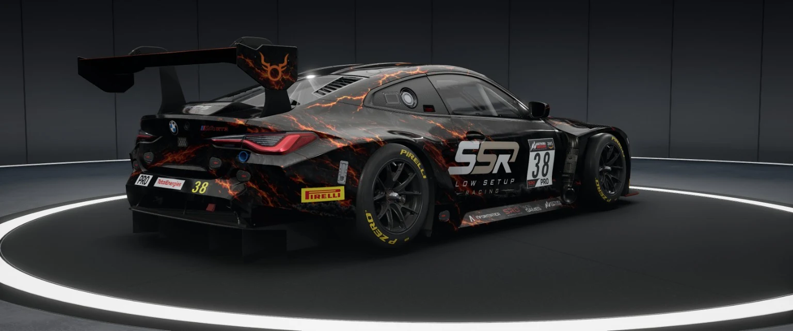

BRANDING / CUSTOM AUTO PAINTINGDESIGN MIT
DESIGN MIT
CHARAKTER.
Individuelle Rennlackierungen und visuelle Identitäten für die virtuelle Rennstrecke.
SIMRACING • MOTORSPORT • DESIGN
Leidenschaft auf der Strecke. Präzision im Design.
Willkommen in der Welt von Sids Design Garage.
 BMW M4 GT3 / ORIGINAL SSR LIVERY
BMW M4 GT3 / ORIGINAL SSR LIVERY01 / DESIGN
Von mutigen Farben bis zu markanten Rennlackierungen: Hier entsteht Motorsport mit Charakter.

Ein BMW M4 GT3 mit unverwechselbarem Look: dunkle Oberfläche, orange Akzente und Motorsport-DNA. Auf Mobilgeräten wischen, um die Perspektive zu wechseln.
Individuelle Rennlackierungen und visuelle Identitäten für die virtuelle Rennstrecke.
02 / RACING
Rennsport bedeutet Kampfgeist, Konstanz und den Willen, immer wieder schneller zu werden.
Mein Zuhause ist Assetto Corsa Competizione. Hier treffen Setup-Arbeit, Teamgeist und echte Rennleidenschaft aufeinander – von der Qualifikation bis zur Zielflagge.
03 / ERFOLGE
Hinter jedem Ergebnis stecken Vorbereitung, Rückschläge und unzählige Runden.
Teamcup-Sieg mit Slow Setup Racing
Gesamtsieg · 3 Siege · 4 Podien
Erfolgreiche Saison mit Finalsieg in Misano
04 / ÜBER MICH
Ich bin M. Schulz – Simracer und kreativer Kopf hinter Sids Design.
Rennfahren und Gestalten gehören für mich zusammen. Auf der Strecke suche ich die nächste Zehntelsekunde, beim Design den Look, der im Feld auffällt. Sids Design Garage verbindet beides.
PROJEKT ANFRAGEN ↗05 / KONTAKT
Du hast eine Idee für eine GT3-Livery oder möchtest dich über ein Designprojekt austauschen? Melde dich gerne.
Ein direkter Kontaktlink kann ergänzt werden, sobald du deine gewünschte E-Mail-Adresse oder Social-Media-Seite festlegst.